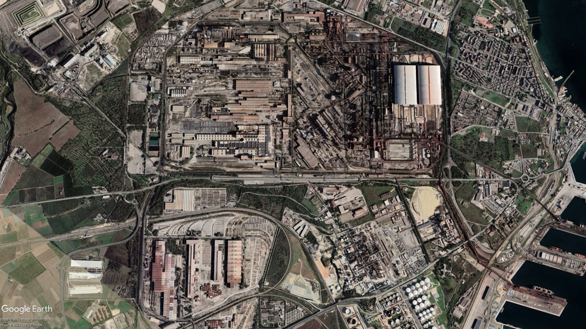

Che cos'è l'ILVA?
L'Ilva di Taranto è la più grande acciaieria d'Europa. Fondato nel 1961, è un impianto siderurgico a ciclo integrale, dove cioè avvengono tutti i passaggi che dal minerale di ferro portano all'acciaio. Il fulcro della produzione sono i cinque altoforni, dove viene prodotta la ghisa. Ognuno è alto più di 40 metri e ha un diametro tra 10 e i 15 metri: al momento quattro altoforni su cinque sono attivi. Lo stabilimento si estende per una superficie complessiva di circa 15,45 km².
Le origini
Il quartiere Tamburi nasce nella metà dell'Ottocento, popolato da contadini. Soltanto agli inizi del XX secolo, per far fronte al crescente numero di famiglie dei dipendenti ferroviari, vengono edificate le prime palazzine, alcune delle quali, tutt'oggi ben salde al terreno (via Galeso e Mar Piccolo). Il quartiere Tamburi sorge quindi ben prima del 1960, l'annus horribilis della storia tarantina in cui si è deciso improvvisamente di costruire "un'industria al contrario", con i settori più inquinanti vicini alle abitazioni.

Ilva: 40.503069 17.202439 - EPSG:4326 - Google Earth 2022

Taranto nord:
legenda
- Ortofoto e land cover 2012
Attualità
La storia moderna dell'impianto siderurgico comincia nel 1988 quando la famiglia Riva rileva l'attività. Già a partire dalla fine degli anni '90 sono emerse diverse problematiche legate alla pericolosità ambientale delle emissioni prodotte dall'impianto. Nel 2012 è stata aperta un'indagine dalla procura di Taranto per inquinamento e reati ambientali che ha portato al sequestro dell'area. Il governo nel frattempo ha approntato un piano di salvaguardia dei posti di lavoro, commissariando l'azienda. Nell'ordinanza con cui ha disposto il sequestro e gli arresti, il gip ha scritto che l'impianto è stato causa e continua a esserlo di «malattia e morte» perché «chi gestiva e gestisce l'ILVA ha continuato in tale attività inquinante con coscienza e volontà per la logica del profitto, calpestando le più elementari regole di sicurezza».